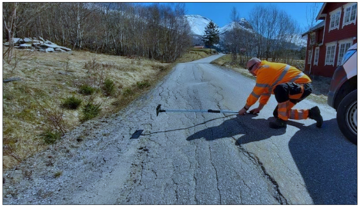

Fersk rapport om vegnettet:
- Veldig dårlig og veldig slitt

ENHETSLEDER: Stine Breivik, enhetsleder for Molde bydrift. Her på Enenvegen i Molde, som har tydelig sporslitasje i asfalten.
En ny rapport viser et betydelig forfall – men det er urealistisk å si at kommunen har midler til å gjøre mye med det.
– Vi hadde behov for å få ei oversikt over vegnettet. Under kommunesammenslåinga fotograferte vi hele vegnettet vårt. De bildene, samt vår kunnskap i organisasjonen, danner grunnlaget for denne rapporten. Vi har registret alt av elementer som gatelys, skilt, fartsdempere og selve vegdekket – og også sett på kvaliteten av det. Det gir oss et grunnlag for å danne ei oversikt over vegnettets samlede drift-, vedlikeholds- og investeringsbehov, forteller Stine Breivik, enhetsleder for Molde bydrift i kommunen.
– Sammen med Veiteknisk institutt har kommunens arbeidsgruppe registrert hele vegnettet i Norsk vegdatabank (NVDB). I tillegg dannet de seg et bilde over forfallet, som i rapporten beskrives som betydelig: 338,7 millioner kroner.
- Generelt veldig dårlig
Forfallet er altså på 338 millioner kroner – men totalsummen
på det kommunen mangler er
større. Det årlige driftsbehovet
er på 37 millioner kroner, og
det årlige vedlikeholdsbehovet
er på 27 millioner kroner. I – Rapporten viser også at vi
skulle hatt 40 millioner kroner
i årlige investeringer på vegnettet. De siste åra har vi i gjennomsnitt hatt cirka 10 millioner,
forteller Breivik.
Hun sier at det ikke er områder i kommunen som skiller
seg spesielt ut, med unntak av
gatelysnettet – som er betydelig dårligere i indre deler av
kommunen, altså gamle Nesset. budsjettet har Molde bydrift
bare 43 prosent av dette til rådighet.
- Rapporten viser også at vi skulle hatt 40 millioner kroner i årlige investeringer på vegnettet. De siste åra har vi i gjennomsnitt hatt cirka 10 millioner, forteller Breivik.
Hun sier at det ikke er områder i kommunen som skiller seg spesielt ut, med unntak av gatelysnettet – som er betydelig dårligere i indre deler av kommunen, altså gamle Nesset.
– Vegnettet er generelt veldig dårlig og veldig slitt. Det er selvsagt enkelte veger som er dårligere enn andre, men det er gjerne veger som ikke er like trafikkert. Med lite midler til rådighet har vi har måtte gjort prioriteringer opp gjennom åra, og da blir vegene med flest folk og størst trafikk prioritert, forklarer Breivik.

Spesielt bekymra for overvann
– Vi får ikke grøfterensa nok og
vi får ikke tømt nok sluk. Det er
fryktelig mange stikkrenner
som skulle vært bytta ut, kanskje til og med oppdimensjonert. Vi så det under
ekstremværet «Gyda» i januar,
og også da det var mye regn for
noen uker siden – skadene på
vegnettet kommer med en
gang. Det problemet kommer
til å øke i takt med klimaendringene, forteller Breivik.
Molde kommune ble som kjent slått sammen med gamle Nesset og gamle Midsund med virkning fra 1. januar 2020. Breivik forteller at sammenslåingen ikke gjorde vesentlige forandringer på helhetsbildet av vegnettets kvalitet
– Men vi er Norges nest lengste kommune, og det å ha oversikt over og drifte et effektivt vegnett i en så lang kommune er ei utfordring som vi kjenner på, sier hun.
FORFALL PÅ VEGNETTET I MOLDE
- Enhetsleder Stine Breivik i Molde bydrift forklarer forfall-begrepet slik: «Om du ikke vedlikeholder vegnettet slik det bør gjøres – så får du forfall. Det vil si når ting blir såpass slitt at det ikke lenger kan repareres, du må investere i nytt. Dette ser vi spesielt på gatelysnettet i kommunen, som har mange feil og mangler, fordi det ikke har vært nok midler til å vedlikeholde det. Nå er det blitt såpass dårlig at vi må investere i nytt istedenfor å skifte ut enkelte komponenter».
- «Det er et betydelig forfall knyttet til drift og vedlikehold av det kommunale vegnettet, vegnettets drenssystem, tilstand på vegdekker og veglys. Forfallet inkluderer behov for flere sluk, stikkrenner og rekkverk på lokale problem-punkter på vegnettet», står det i rapporten.
- Forfallet deles inn i tre kategorier: Driftsrelatert, vedlikeholdsrelatert og funksjonsbasert forfall. Sistnevnte er størst og omfatter 68 prosent av forfallet på vegnettet. Breivik beskriver det som «det vi ikke har, men som vi tenker at vi trenger». I rapporten eksemplifiseres det med «behov for nye rekkverk, fartsdempere, skilt, busstopp, sluk, stikkrenner, sikring molo Magerøyvegen, forsterkning fundament (akseltrykk)».
- Per mai 2022 var forfallet beregnet til 338,7 millioner kroner.
- Tar litt pusten fra oss
Rapporten ble presentert for
politikerne i et møte med hovedutvalget for teknisk, plan,
næring og miljø i kommunen
20. september. Der ble det vedtatt at utvalget skulle ta rapporten «til orientering».
Molde bydrift presenterer tre anbefalte vegfaglige prioriteringer for 2022–2028. Alternativ A, å øke driftsbudsjettet og samtidig fjerne forfallet, alternativ B, å stoppe veksten i forfallet, eller alternativ C, å fortsette som før.
– Rapporten tar litt pusten fra oss alle sammen. Det er urealistisk at vi kan vedta alternativ A eller B, for det har ikke kommunen penger til. Men det er veldig bra at vi nå har et mye bedre kunnskapsgrunnlag om vegnettet vårt – som også er digitalisert – så det gir oss flere muligheter til å kunne prioritere riktig. Det blir stramme prioriteringer, for det er behov i alle enheter i kommunen, forteller Breivik, og fortsetter: – I tillegg tar vi med oss kunnskapsgrunnlaget når vi skal jobbe videre med planverket innenfor mobilitet og trafikksikkerhet, og så må vi få en skikkelig diskusjon angående bruken av vegnettet vårt i framtida. Skal vi bruke det annerledes? Bør vi prioritere gående og syklende? Hvor skal det være offentlig veg?